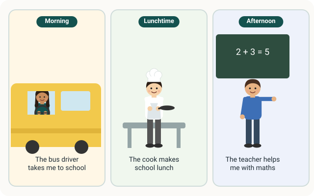
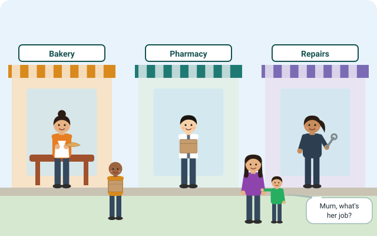
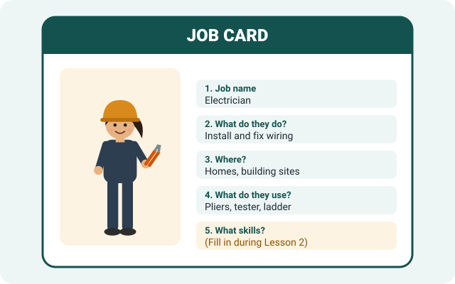

K7 · Self-directed learning and career development › Level 1 Exploring
Jobs around you
For the adult. Read each part aloud. The child answers out loud or by drawing, and does not need to use a device.
- You need: A4 paper or the printed Job card template, coloured pens, and an envelope to keep the cards in.
- Ages 6–8: you write, the child draws. Older children: the child writes.
- This lesson is about exploring, not choosing a job. Praise curiosity. Avoid pressing questions like "What will you be when you grow up?".
1. Objectives
- Name at least 5 jobs around you and say what each one does.
- Fill in the first 4 boxes of a Job card.
2. Retrieval warm-up
This is the first lesson of the course. Think back to yesterday.
- From morning to evening yesterday, who did you see working?
- Who helped you get breakfast, or helped you get to school?
Ideas for answers
There is no single answer. For example: the person selling breakfast, the school caretaker, the bus driver, the teacher, the school cook. Each of them is doing a job.
3. Explanation
A job is work a person does regularly to help other people, and they are paid for it. There are lots of jobs around you. Some you see every day, like selling things or teaching. Some you rarely see, like an electrician fixing power lines late at night.

Go job hunting. The most fun way to learn about jobs is to watch. When you are out, be a "job hunter" with 4 steps:
Job hunting in 4 steps
- LookWho is working around you?
- GuessWhat are they doing? What are they holding?
- AskIf you are not sure, ask the adult with you.
- WriteWrite it on a Job card when you get home.
A Job card is a small card you use all through the course. Each card has 5 boxes: job name, what they do, where, what they use, what skills they need. Today you fill in the first 4 boxes. You will fill in box 5 in Lesson 2.
A job has many small tasks. A baker does not only hand bread to customers. She also bakes, makes fillings, takes money and cleans the counter. In the "What do they do?" box, write at least 2 small tasks.
4. Workplace example
Hypothetical scenario. On Sunday morning, Annie (age 7) goes to the market with her mum. They play "job hunting" on the street near the market.

Annie points at the repair shop and asks: "Mum, what's her job?"
Mum does not answer straight away. She asks back: "Look closely. What is she holding?"
Annie looks carefully, then shouts: "A spanner. She fixes motorbikes!"
At home, they make a Job card together:
| Box | Annie writes |
|---|---|
| 1. Job name | Motorbike mechanic |
| 2. What do they do? | Fix broken bikes, mend tyres, change the oil |
| 3. Where? | A repair shop by the road |
| 4. What do they use? | Spanners, an air pump, screwdrivers |
Why this works: Mum does not give the answer at once. She asks questions so Annie looks for herself. What children discover themselves usually stays longer than what they are only told.
5. Practice
Choose a job you see this week. Make a Job card and fill in the first 4 boxes.

Hint 1
Choose someone you see every day: the caretaker, the cleaner, your teacher, the person selling vegetables.
Hint 2
The "What do they use?" box: look at what is in their hands. Look around where they work for machines and tools.
Model answer
| Box | Example |
|---|---|
| 1. Job name | School caretaker |
| 2. What do they do? | Opens the gate, watches the bike park, keeps the school safe |
| 3. Where? | The school gate, the caretaker's room |
| 4. What do they use? | A notebook, a torch, a phone |
(This is just an example. Your card can be different.)
A Job card has 5 boxes
6. Self-check
Choose an answer. Every option has an explanation.
Question 1. Nina sees a woman holding scissors and a comb, cutting a customer's hair. What fits the "What do they use?" box on a Job card?
-
Correct. Correct. The "What do they use?" box lists the job's tools and machines.
-
Not quite. This is what she does, so it fits the "What do they do?" box.
-
Not quite. This is where she works, so it fits the "Where?" box.
Question 2. What does a baker do?
-
Not quite. That is just one task. A job has many small tasks inside it.
-
Correct. Correct. Naming many small tasks helps you understand the job better.
-
Not quite. People who sell things have lots to do before and after selling.
Question 3. While job hunting, you do not know what job someone does. What should you do?
-
Not quite. Guessing is good, but check before you write it down.
-
Correct. Correct. That is Look, Guess, Ask, before you Write.
-
Not quite. An unfamiliar job is a chance to learn about a new job.
Question 4. Which box of the Job card will you fill in during Lesson 2?
-
Not quite. You fill in this box in Lesson 1.
-
Not quite. You fill in this box in Lesson 1.
-
Correct. Correct. Lesson 2 helps you find the skills a job needs.
7. Reflection
The adult asks, and you answer out loud. This part is just for talking; the site saves nothing.
- Which job did you notice today that you had not noticed before?
- Name 3 small tasks in a job you know.
8. Real-world application
Over the next 7 days, each time you go out, "hunt" for more jobs. Goal: 3 Job cards. Keep the cards in an envelope. In Lesson 7, you will put them on display.
Connecting ideas. The Job card is the thread through the whole course. Lesson 2 fills in box 5. Lesson 6 uses an interview to make the card more accurate. Lesson 7 displays them all. See the course map and the skill K7 Self-directed learning and career development.
Curiosity as a good habit is covered on daynentang.com.
9. Metadata
| skill | K7 · Self-directed learning and career development |
|---|---|
| level | Level 1 · Exploring |
| group | N1 |
| framework_map | WEF: Curiosity and lifelong learning; CSfW: 1a Manage career and work life; NACE: Career and Self-Development; LifeComp: L3 Managing learning (reference only) |
| original | Vietnamese version |
| updated | 2026-11-14 |
Finish the lesson
Mark it as done and the site suggests reviews after 1, 3 and 7 days. The data stays on your device only.
Suggested reviews: